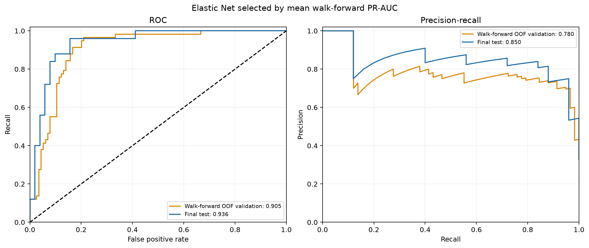
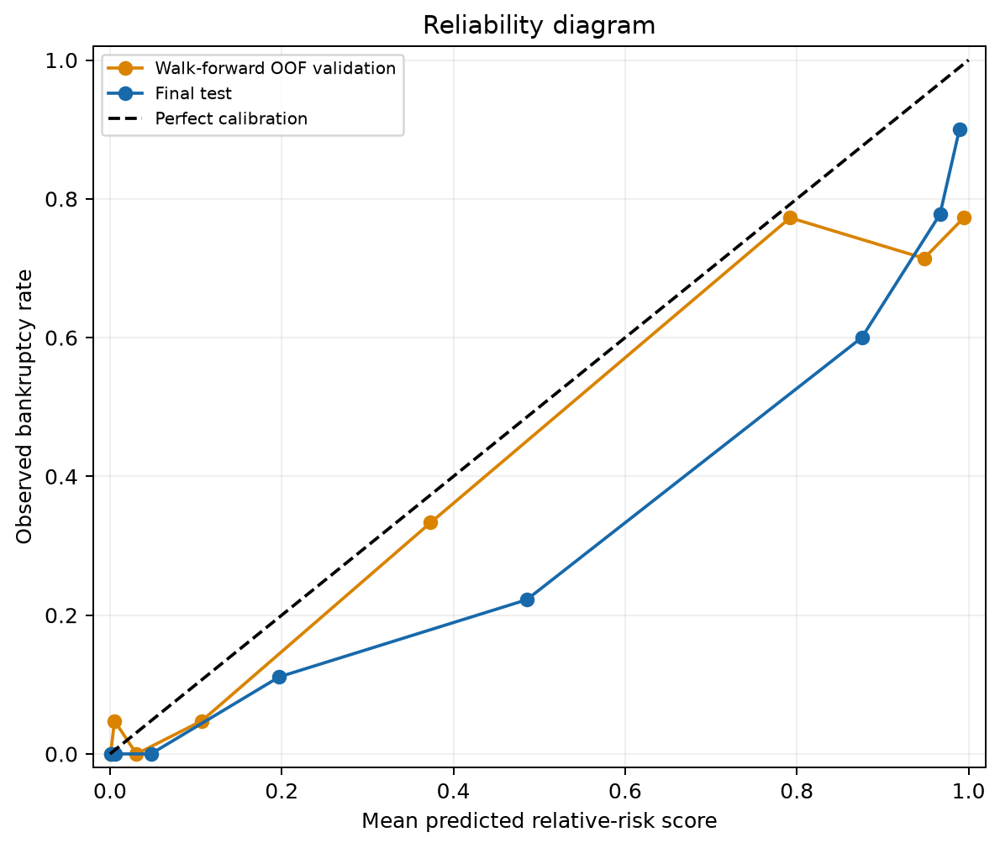

Hyperparameters are selected by mean average precision (PR-AUC) across walk-forward validation folds. The operating threshold is selected from pooled out-of-fold validation predictions by balanced accuracy, with sensitivity and specificity tie-breakers. The chronological test is opened only after both decisions are fixed. This matched sample supports relative-risk scores, not population prevalence.
| selected_candidate | primary_feature_specification | primary_feature_selection | selected_feature_columns | C | l1_ratio | class_weight | mean_validation_pr_auc | walk_forward_folds | selection_metric | operating_threshold | threshold_source | threshold_metric | fit_split | solver | max_iter | tol | seed | preprocessing_sha256 | active_predictors | versions |
|---|---|---|---|---|---|---|---|---|---|---|---|---|---|---|---|---|---|---|---|---|
| unweighted_l1_0.9_C_1 | compact | {'primary_specification': 'compact', 'compact_pooled_oof_pr_auc': 0.7802897341154269, 'full_pooled_oof_pr_auc': 0.6820441500396872, 'full_minus_compact_pr_auc': -0.09824558407573969, 'pr_auc_tolerance': 0.02, 'selection_metric': 'pooled walk-forward OOF PR-AUC', 'test_used_for_selection': False, 'compact_selected_C': 1.0, 'full_selected_C': 0.1} | [numeric__original_log_total_assets, numeric__original_log_market_cap, numeric__derived_debt_to_assets, numeric__derived_liabilities_to_assets, numeric__derived_cash_to_assets, numeric__derived_current_ratio, numeric__derived_ebit_to_assets, numeric__derived_ebitda_to_assets, numeric__derived_operating_cash_flow_to_assets, numeric__derived_interest_coverage, numeric__derived_free_cash_flow_to_debt, numeric__derived_market_to_book, numeric__trend_revenue_growth_1y, numeric__trend_asset_growth_1y, numeric__trend_debt_growth_1y, numeric__market_stock_return_12m, numeric__market_volatility_12m, numeric__market_maximum_drawdown_12m, numeric__macro_inflation, numeric__macro_unemployment, numeric__macro_interest_rate, categorical__sector_Communications, categorical__sector_Consumer Discretionary, categorical__sector_Consumer Staples, categorical__sector_Energy, categorical__sector_Health Care, categorical__sector_Industrials, categorical__sector_Materials, categorical__sector_Technology, categorical__sector_Utilities, categorical__sector___MISSING__, categorical__industry_Advertising & Marketing, categorical__industry_Aerospace & Defense, categorical__industry_Apparel & Textile Products, categorical__industry_Automotive, categorical__industry_Beverages, categorical__industry_Cable & Satellite, categorical__industry_Chemicals, categorical__industry_Commercial Support Services, categorical__industry_Construction Materials, categorical__industry_Consumer Services, categorical__industry_Electric Utilities, categorical__industry_Electrical Equipment, categorical__industry_Entertainment Content, categorical__industry_Forestry, Paper & Wood Products, categorical__industry_Health Care Facilities & Svcs, categorical__industry_Home & Office Products, categorical__industry_Home Construction, categorical__industry_IT Services, categorical__industry_Industrial Support Services, categorical__industry_Internet Media & Services, categorical__industry_Leisure Facilities & Services, categorical__industry_Leisure Products, categorical__industry_Machinery, categorical__industry_Oil & Gas Supply Chain, categorical__industry_Publishing & Broadcasting, categorical__industry_Renewable Energy, categorical__industry_Retail - Discretionary, categorical__industry_Semiconductors, categorical__industry_Software, categorical__industry_Steel, categorical__industry_Technology Hardware, categorical__industry_Telecommunications, categorical__industry_Transportation & Logistics, categorical__industry_Wholesale - Consumer Staples, categorical__industry_Wholesale - Discretionary, categorical__industry___MISSING__] | 1.0 | 0.9 | unweighted | 0.91191 | [fold_1, fold_2, fold_3, fold_4] | mean validation PR-AUC | 0.276318 | pooled out-of-fold validation predictions | balanced accuracy with sensitivity/specificity tie-breaks | static training only | saga | 12000 | 0.0001 | 42 | f08a77fd75fd3bdfb3c40da2e05516b81825442a6f5de773784999f65dfe6f5b | 65 | {'python': '3.12.5', 'sklearn': '1.9.1', 'numpy': '2.5.3', 'pandas': '3.0.6', 'joblib': '1.6.0'} |
Selected mean validation PR-AUC: 0.9119; frozen threshold: 0.276318; folds: fold_1, fold_2, fold_3, fold_4.
| split | n | bankrupt_n | prevalence | threshold | roc_auc | pr_auc_average_precision | pr_auc_trapezoidal | balanced_accuracy | sensitivity | specificity | f1 | brier_score | tn | fp | fn | tp | recall | precision | calibration_intercept | calibration_slope | calibration_status | top_risk_rows_1pct | top_risk_cases_1pct | top_risk_capture_1pct | top_risk_precision_1pct | top_risk_rows_5pct | top_risk_cases_5pct | top_risk_capture_5pct | top_risk_precision_5pct | top_risk_rows_10pct | top_risk_cases_10pct | top_risk_capture_10pct | top_risk_precision_10pct |
|---|---|---|---|---|---|---|---|---|---|---|---|---|---|---|---|---|---|---|---|---|---|---|---|---|---|---|---|---|---|---|---|---|---|
| walk_forward_oof_validation | 172 | 58 | 0.33721 | 0.27632 | 0.90532 | 0.77983 | 0.77644 | 0.8775 | 0.96552 | 0.78947 | 0.81159 | 0.11953 | 90 | 24 | 2 | 56 | 0.96552 | 0.7 | -0.64917 | 0.52622 | ok | 2 | 2 | 0.034483 | 1 | 9 | 7 | 0.12069 | 0.77778 | 18 | 14 | 0.24138 | 0.77778 |
| final_test | 76 | 25 | 0.32895 | 0.27632 | 0.93647 | 0.84963 | 0.84382 | 0.82314 | 0.96 | 0.68627 | 0.73846 | 0.11351 | 35 | 16 | 1 | 24 | 0.96 | 0.6 | -1.2985 | 0.7663 | ok | 1 | 1 | 0.04 | 1 | 4 | 3 | 0.12 | 0.75 | 8 | 7 | 0.28 | 0.875 |
Top-risk capture is the share of bankrupt events in the top-scored 1%, 5%, or 10% of rows. Calibration slope and intercept are from logistic recalibration on the logit scores; calibration is descriptive only.


| candidate_id | C | l1_ratio | class_weight | eligible | folds_completed | mean_validation_pr_auc | mean_validation_roc_auc | mean_validation_brier_score | total_iterations |
|---|---|---|---|---|---|---|---|---|---|
| unweighted_l1_0.9_C_1 | 1 | 0.9 | unweighted | True | 4 | 0.91191 | 0.94566 | 0.12531 | 6023 |
| unweighted_l1_0.5_C_1 | 1 | 0.5 | unweighted | True | 4 | 0.91191 | 0.94392 | 0.12712 | 2951 |
| balanced_l1_0.9_C_1 | 1 | 0.9 | balanced | True | 4 | 0.91116 | 0.94586 | 0.12852 | 3768 |
| balanced_l1_0.1_C_1 | 1 | 0.1 | balanced | True | 4 | 0.90613 | 0.94015 | 0.14265 | 2112 |
| unweighted_l1_0.1_C_1 | 1 | 0.1 | unweighted | True | 4 | 0.9057 | 0.93814 | 0.14019 | 2081 |
| balanced_l1_0.5_C_1 | 1 | 0.5 | balanced | True | 4 | 0.90551 | 0.94171 | 0.13362 | 2581 |
| unweighted_l1_0.1_C_0.1 | 0.1 | 0.1 | unweighted | True | 4 | 0.90076 | 0.93934 | 0.12988 | 3579 |
| unweighted_l1_0.1_C_10 | 10 | 0.1 | unweighted | True | 4 | 0.90039 | 0.93204 | 0.15675 | 7131 |
| unweighted_l1_0.1_C_0.01 | 0.01 | 0.1 | unweighted | True | 4 | 0.89831 | 0.93643 | 0.17168 | 87 |
| unweighted_l1_0.5_C_10 | 10 | 0.5 | unweighted | True | 4 | 0.89765 | 0.9313 | 0.15319 | 8277 |
| unweighted_l1_0.9_C_10 | 10 | 0.9 | unweighted | True | 4 | 0.89721 | 0.93254 | 0.14681 | 10440 |
| balanced_l1_0.5_C_10 | 10 | 0.5 | balanced | True | 4 | 0.89619 | 0.93345 | 0.15503 | 8599 |
| balanced_l1_0.9_C_10 | 10 | 0.9 | balanced | True | 4 | 0.896 | 0.93219 | 0.14774 | 10783 |
| balanced_l1_0.9_C_0.1 | 0.1 | 0.9 | balanced | True | 4 | 0.89531 | 0.93379 | 0.14957 | 674 |
| balanced_l1_0.1_C_0.1 | 0.1 | 0.1 | balanced | True | 4 | 0.89474 | 0.93514 | 0.14463 | 757 |
| unweighted_l1_0.9_C_0.1 | 0.1 | 0.9 | unweighted | True | 4 | 0.89462 | 0.93382 | 0.14242 | 569 |
| balanced_l1_0.1_C_0.01 | 0.01 | 0.1 | balanced | True | 4 | 0.89334 | 0.93389 | 0.17369 | 87 |
| balanced_l1_0.1_C_10 | 10 | 0.1 | balanced | True | 4 | 0.89304 | 0.93093 | 0.15888 | 7427 |
| balanced_l1_0.5_C_0.1 | 0.1 | 0.5 | balanced | True | 4 | 0.89097 | 0.93518 | 0.14133 | 1396 |
| unweighted_l1_0.5_C_0.1 | 0.1 | 0.5 | unweighted | True | 4 | 0.89045 | 0.93558 | 0.13378 | 3148 |
| balanced_l1_0.5_C_0.01 | 0.01 | 0.5 | balanced | True | 4 | 0.85807 | 0.9153 | 0.21905 | 103 |
| unweighted_l1_0.5_C_0.01 | 0.01 | 0.5 | unweighted | True | 4 | 0.85023 | 0.90989 | 0.22019 | 135 |
| unweighted_l1_0.9_C_0.01 | 0.01 | 0.9 | unweighted | True | 4 | 0.33743 | 0.5 | 0.24171 | 18 |
| unweighted_l1_0.1_C_0.001 | 0.001 | 0.1 | unweighted | True | 4 | 0.33743 | 0.5 | 0.24439 | 12 |
| unweighted_l1_0.9_C_0.001 | 0.001 | 0.9 | unweighted | True | 4 | 0.33743 | 0.5 | 0.24549 | 4 |
| unweighted_l1_0.5_C_0.001 | 0.001 | 0.5 | unweighted | True | 4 | 0.33743 | 0.5 | 0.24556 | 4 |
| balanced_l1_0.9_C_0.01 | 0.01 | 0.9 | balanced | True | 4 | 0.33743 | 0.5 | 0.24979 | 20 |
| balanced_l1_0.9_C_0.001 | 0.001 | 0.9 | balanced | True | 4 | 0.33743 | 0.5 | 0.24991 | 4 |
| balanced_l1_0.5_C_0.001 | 0.001 | 0.5 | balanced | True | 4 | 0.33743 | 0.5 | 0.24992 | 4 |
| balanced_l1_0.1_C_0.001 | 0.001 | 0.1 | balanced | True | 4 | 0.33743 | 0.5 | 0.24999 | 16 |
| candidate_id | fold | C | l1_ratio | class_weight | eligible | iterations | validation_pr_auc | validation_roc_auc | validation_brier_score | elapsed_seconds | warnings |
|---|---|---|---|---|---|---|---|---|---|---|---|
| unweighted_l1_0.1_C_0.001 | fold_1 | 0.001 | 0.1 | unweighted | True | 4 | 0.33333 | 0.5 | 0.24457 | 0.0030663 | |
| unweighted_l1_0.1_C_0.001 | fold_2 | 0.001 | 0.1 | unweighted | True | 1 | 0.34375 | 0.5 | 0.246 | 0.0027566 | |
| unweighted_l1_0.1_C_0.001 | fold_3 | 0.001 | 0.1 | unweighted | True | 3 | 0.33333 | 0.5 | 0.24329 | 0.0028996 | |
| unweighted_l1_0.1_C_0.001 | fold_4 | 0.001 | 0.1 | unweighted | True | 4 | 0.33929 | 0.5 | 0.24369 | 0.0028366 | |
| unweighted_l1_0.1_C_0.01 | fold_1 | 0.01 | 0.1 | unweighted | True | 22 | 0.82414 | 0.89053 | 0.22763 | 0.0034122 | |
| unweighted_l1_0.1_C_0.01 | fold_2 | 0.01 | 0.1 | unweighted | True | 20 | 0.93742 | 0.93939 | 0.16061 | 0.003332 | |
| unweighted_l1_0.1_C_0.01 | fold_3 | 0.01 | 0.1 | unweighted | True | 22 | 0.94909 | 0.97556 | 0.14008 | 0.0036341 | |
| unweighted_l1_0.1_C_0.01 | fold_4 | 0.01 | 0.1 | unweighted | True | 23 | 0.88258 | 0.94026 | 0.1584 | 0.003788 | |
| unweighted_l1_0.1_C_0.1 | fold_1 | 0.1 | 0.1 | unweighted | True | 804 | 0.82696 | 0.89645 | 0.24757 | 0.032826 | |
| unweighted_l1_0.1_C_0.1 | fold_2 | 0.1 | 0.1 | unweighted | True | 827 | 0.93521 | 0.93939 | 0.10939 | 0.039074 | |
| unweighted_l1_0.1_C_0.1 | fold_3 | 0.1 | 0.1 | unweighted | True | 821 | 0.94713 | 0.97556 | 0.063452 | 0.047277 | |
| unweighted_l1_0.1_C_0.1 | fold_4 | 0.1 | 0.1 | unweighted | True | 1127 | 0.89375 | 0.94595 | 0.099129 | 0.077371 | |
| unweighted_l1_0.1_C_1 | fold_1 | 1 | 0.1 | unweighted | True | 411 | 0.84528 | 0.90533 | 0.26071 | 0.024357 | |
| unweighted_l1_0.1_C_1 | fold_2 | 1 | 0.1 | unweighted | True | 470 | 0.9201 | 0.92208 | 0.15737 | 0.032071 | |
| unweighted_l1_0.1_C_1 | fold_3 | 1 | 0.1 | unweighted | True | 562 | 0.95515 | 0.97778 | 0.047369 | 0.045124 | |
| unweighted_l1_0.1_C_1 | fold_4 | 1 | 0.1 | unweighted | True | 638 | 0.90228 | 0.94737 | 0.095336 | 0.057271 | |
| unweighted_l1_0.1_C_10 | fold_1 | 10 | 0.1 | unweighted | True | 1492 | 0.80565 | 0.87278 | 0.30958 | 0.084379 | |
| unweighted_l1_0.1_C_10 | fold_2 | 10 | 0.1 | unweighted | True | 1783 | 0.94249 | 0.93939 | 0.14763 | 0.11867 | |
| unweighted_l1_0.1_C_10 | fold_3 | 10 | 0.1 | unweighted | True | 1880 | 0.96639 | 0.98 | 0.059296 | 0.1458 | |
| unweighted_l1_0.1_C_10 | fold_4 | 10 | 0.1 | unweighted | True | 1976 | 0.88705 | 0.93599 | 0.11049 | 0.17975 | |
| unweighted_l1_0.5_C_0.001 | fold_1 | 0.001 | 0.5 | unweighted | True | 1 | 0.33333 | 0.5 | 0.24507 | 0.0031049 | |
| unweighted_l1_0.5_C_0.001 | fold_2 | 0.001 | 0.5 | unweighted | True | 1 | 0.34375 | 0.5 | 0.24593 | 0.0028934 | |
| unweighted_l1_0.5_C_0.001 | fold_3 | 0.001 | 0.5 | unweighted | True | 1 | 0.33333 | 0.5 | 0.24575 | 0.0028205 | |
| unweighted_l1_0.5_C_0.001 | fold_4 | 0.001 | 0.5 | unweighted | True | 1 | 0.33929 | 0.5 | 0.2455 | 0.002825 | |
| unweighted_l1_0.5_C_0.01 | fold_1 | 0.01 | 0.5 | unweighted | True | 56 | 0.74366 | 0.84615 | 0.2397 | 0.0046095 | |
| unweighted_l1_0.5_C_0.01 | fold_2 | 0.01 | 0.5 | unweighted | True | 28 | 0.86357 | 0.88745 | 0.2285 | 0.0040619 | |
| unweighted_l1_0.5_C_0.01 | fold_3 | 0.01 | 0.5 | unweighted | True | 28 | 0.90339 | 0.96 | 0.21068 | 0.0040254 | |
| unweighted_l1_0.5_C_0.01 | fold_4 | 0.01 | 0.5 | unweighted | True | 23 | 0.8903 | 0.94595 | 0.20188 | 0.0039298 | |
| unweighted_l1_0.5_C_0.1 | fold_1 | 0.1 | 0.5 | unweighted | True | 95 | 0.81038 | 0.88462 | 0.27204 | 0.0058153 | |
| unweighted_l1_0.5_C_0.1 | fold_2 | 0.1 | 0.5 | unweighted | True | 1067 | 0.9303 | 0.93939 | 0.097996 | 0.043715 | |
| unweighted_l1_0.5_C_0.1 | fold_3 | 0.1 | 0.5 | unweighted | True | 1020 | 0.92164 | 0.96667 | 0.07189 | 0.049416 | |
| unweighted_l1_0.5_C_0.1 | fold_4 | 0.1 | 0.5 | unweighted | True | 966 | 0.89948 | 0.95164 | 0.09319 | 0.055506 | |
| unweighted_l1_0.5_C_1 | fold_1 | 1 | 0.5 | unweighted | True | 441 | 0.83102 | 0.90533 | 0.24783 | 0.024234 | |
| unweighted_l1_0.5_C_1 | fold_2 | 1 | 0.5 | unweighted | True | 720 | 0.94083 | 0.93506 | 0.12197 | 0.042259 | |
| unweighted_l1_0.5_C_1 | fold_3 | 1 | 0.5 | unweighted | True | 980 | 0.96541 | 0.98222 | 0.046507 | 0.06851 | |
| unweighted_l1_0.5_C_1 | fold_4 | 1 | 0.5 | unweighted | True | 810 | 0.91038 | 0.95306 | 0.092181 | 0.062624 | |
| unweighted_l1_0.5_C_10 | fold_1 | 10 | 0.5 | unweighted | True | 1652 | 0.79466 | 0.86982 | 0.30475 | 0.090411 | |
| unweighted_l1_0.5_C_10 | fold_2 | 10 | 0.5 | unweighted | True | 2139 | 0.94249 | 0.93939 | 0.13751 | 0.13637 | |
| unweighted_l1_0.5_C_10 | fold_3 | 10 | 0.5 | unweighted | True | 2189 | 0.96639 | 0.98 | 0.058786 | 0.15481 | |
| unweighted_l1_0.5_C_10 | fold_4 | 10 | 0.5 | unweighted | True | 2297 | 0.88705 | 0.93599 | 0.1117 | 0.19446 | |
| unweighted_l1_0.9_C_0.001 | fold_1 | 0.001 | 0.9 | unweighted | True | 1 | 0.33333 | 0.5 | 0.24497 | 0.0030279 | |
| unweighted_l1_0.9_C_0.001 | fold_2 | 0.001 | 0.9 | unweighted | True | 1 | 0.34375 | 0.5 | 0.24586 | 0.0028055 | |
| unweighted_l1_0.9_C_0.001 | fold_3 | 0.001 | 0.9 | unweighted | True | 1 | 0.33333 | 0.5 | 0.24569 | 0.0028258 | |
| unweighted_l1_0.9_C_0.001 | fold_4 | 0.001 | 0.9 | unweighted | True | 1 | 0.33929 | 0.5 | 0.24545 | 0.0030071 | |
| unweighted_l1_0.9_C_0.01 | fold_1 | 0.01 | 0.9 | unweighted | True | 5 | 0.33333 | 0.5 | 0.24258 | 0.0029469 | |
| unweighted_l1_0.9_C_0.01 | fold_2 | 0.01 | 0.9 | unweighted | True | 3 | 0.34375 | 0.5 | 0.24173 | 0.0028636 | |
| unweighted_l1_0.9_C_0.01 | fold_3 | 0.01 | 0.9 | unweighted | True | 3 | 0.33333 | 0.5 | 0.24117 | 0.0028911 | |
| unweighted_l1_0.9_C_0.01 | fold_4 | 0.01 | 0.9 | unweighted | True | 7 | 0.33929 | 0.5 | 0.24136 | 0.0031297 | |
| unweighted_l1_0.9_C_0.1 | fold_1 | 0.1 | 0.9 | unweighted | True | 117 | 0.79348 | 0.86391 | 0.27625 | 0.0065292 | |
| unweighted_l1_0.9_C_0.1 | fold_2 | 0.1 | 0.9 | unweighted | True | 126 | 0.93939 | 0.94372 | 0.10484 | 0.0074743 | |
| unweighted_l1_0.9_C_0.1 | fold_3 | 0.1 | 0.9 | unweighted | True | 130 | 0.92997 | 0.96889 | 0.085517 | 0.0085489 | |
| unweighted_l1_0.9_C_0.1 | fold_4 | 0.1 | 0.9 | unweighted | True | 196 | 0.91565 | 0.95875 | 0.10309 | 0.012509 | |
| unweighted_l1_0.9_C_1 | fold_1 | 1 | 0.9 | unweighted | True | 761 | 0.82157 | 0.89645 | 0.25822 | 0.031986 | |
| unweighted_l1_0.9_C_1 | fold_2 | 1 | 0.9 | unweighted | True | 1910 | 0.94628 | 0.94805 | 0.1091 | 0.088589 | |
| unweighted_l1_0.9_C_1 | fold_3 | 1 | 0.9 | unweighted | True | 1696 | 0.96541 | 0.98222 | 0.045676 | 0.095881 | |
| unweighted_l1_0.9_C_1 | fold_4 | 1 | 0.9 | unweighted | True | 1656 | 0.91438 | 0.9559 | 0.088248 | 0.1111 | |
| unweighted_l1_0.9_C_10 | fold_1 | 10 | 0.9 | unweighted | True | 1933 | 0.78435 | 0.86391 | 0.29866 | 0.1002 | |
| unweighted_l1_0.9_C_10 | fold_2 | 10 | 0.9 | unweighted | True | 2866 | 0.94628 | 0.94805 | 0.11559 | 0.16713 | |
| unweighted_l1_0.9_C_10 | fold_3 | 10 | 0.9 | unweighted | True | 2732 | 0.97115 | 0.98222 | 0.059643 | 0.18973 | |
| unweighted_l1_0.9_C_10 | fold_4 | 10 | 0.9 | unweighted | True | 2909 | 0.88705 | 0.93599 | 0.11335 | 0.23397 | |
| balanced_l1_0.1_C_0.001 | fold_1 | 0.001 | 0.1 | balanced | True | 3 | 0.33333 | 0.5 | 0.25034 | 0.003849 | |
| balanced_l1_0.1_C_0.001 | fold_2 | 0.001 | 0.1 | balanced | True | 3 | 0.34375 | 0.5 | 0.24968 | 0.0034873 | |
| balanced_l1_0.1_C_0.001 | fold_3 | 0.001 | 0.1 | balanced | True | 3 | 0.33333 | 0.5 | 0.24986 | 0.0034597 | |
| balanced_l1_0.1_C_0.001 | fold_4 | 0.001 | 0.1 | balanced | True | 7 | 0.33929 | 0.5 | 0.25009 | 0.0037301 | |
| balanced_l1_0.1_C_0.01 | fold_1 | 0.01 | 0.1 | balanced | True | 22 | 0.82414 | 0.89053 | 0.23667 | 0.0041681 | |
| balanced_l1_0.1_C_0.01 | fold_2 | 0.01 | 0.1 | balanced | True | 20 | 0.92833 | 0.93506 | 0.15803 | 0.0041266 | |
| balanced_l1_0.1_C_0.01 | fold_3 | 0.01 | 0.1 | balanced | True | 22 | 0.93502 | 0.97111 | 0.13968 | 0.004343 | |
| balanced_l1_0.1_C_0.01 | fold_4 | 0.01 | 0.1 | balanced | True | 23 | 0.88587 | 0.93883 | 0.16038 | 0.0046547 | |
| balanced_l1_0.1_C_0.1 | fold_1 | 0.1 | 0.1 | balanced | True | 95 | 0.80522 | 0.88462 | 0.29888 | 0.0071882 | |
| balanced_l1_0.1_C_0.1 | fold_2 | 0.1 | 0.1 | balanced | True | 110 | 0.9334 | 0.93506 | 0.090348 | 0.0084412 | |
| balanced_l1_0.1_C_0.1 | fold_3 | 0.1 | 0.1 | balanced | True | 97 | 0.95152 | 0.97778 | 0.073981 | 0.0087542 | |
| balanced_l1_0.1_C_0.1 | fold_4 | 0.1 | 0.1 | balanced | True | 455 | 0.88881 | 0.9431 | 0.11531 | 0.033464 | |
| balanced_l1_0.1_C_1 | fold_1 | 1 | 0.1 | balanced | True | 395 | 0.84528 | 0.90533 | 0.28633 | 0.024573 | |
| balanced_l1_0.1_C_1 | fold_2 | 1 | 0.1 | balanced | True | 487 | 0.9233 | 0.93074 | 0.13611 | 0.034267 | |
| balanced_l1_0.1_C_1 | fold_3 | 1 | 0.1 | balanced | True | 576 | 0.95986 | 0.98 | 0.048688 | 0.045576 | |
| balanced_l1_0.1_C_1 | fold_4 | 1 | 0.1 | balanced | True | 654 | 0.89609 | 0.94452 | 0.099452 | 0.060613 | |
| balanced_l1_0.1_C_10 | fold_1 | 10 | 0.1 | balanced | True | 1513 | 0.79183 | 0.86686 | 0.32299 | 0.086535 | |
| balanced_l1_0.1_C_10 | fold_2 | 10 | 0.1 | balanced | True | 1825 | 0.93719 | 0.94372 | 0.14341 | 0.12076 | |
| balanced_l1_0.1_C_10 | fold_3 | 10 | 0.1 | balanced | True | 2004 | 0.96639 | 0.98 | 0.058095 | 0.1558 | |
| balanced_l1_0.1_C_10 | fold_4 | 10 | 0.1 | balanced | True | 2085 | 0.87674 | 0.93314 | 0.11102 | 0.19084 | |
| balanced_l1_0.5_C_0.001 | fold_1 | 0.001 | 0.5 | balanced | True | 1 | 0.33333 | 0.5 | 0.2489 | 0.0035026 | |
| balanced_l1_0.5_C_0.001 | fold_2 | 0.001 | 0.5 | balanced | True | 1 | 0.34375 | 0.5 | 0.24999 | 0.0033246 | |
| balanced_l1_0.5_C_0.001 | fold_3 | 0.001 | 0.5 | balanced | True | 1 | 0.33333 | 0.5 | 0.2508 | 0.0034119 | |
| balanced_l1_0.5_C_0.001 | fold_4 | 0.001 | 0.5 | balanced | True | 1 | 0.33929 | 0.5 | 0.24998 | 0.0035258 | |
| balanced_l1_0.5_C_0.01 | fold_1 | 0.01 | 0.5 | balanced | True | 27 | 0.74366 | 0.84615 | 0.24531 | 0.004144 | |
| balanced_l1_0.5_C_0.01 | fold_2 | 0.01 | 0.5 | balanced | True | 25 | 0.89495 | 0.90909 | 0.22416 | 0.0043097 | |
| balanced_l1_0.5_C_0.01 | fold_3 | 0.01 | 0.5 | balanced | True | 23 | 0.90339 | 0.96 | 0.20529 | 0.0044698 | |
| balanced_l1_0.5_C_0.01 | fold_4 | 0.01 | 0.5 | balanced | True | 28 | 0.8903 | 0.94595 | 0.20143 | 0.0047905 | |
| balanced_l1_0.5_C_0.1 | fold_1 | 0.1 | 0.5 | balanced | True | 103 | 0.80558 | 0.8787 | 0.28245 | 0.0066056 | |
| balanced_l1_0.5_C_0.1 | fold_2 | 0.1 | 0.5 | balanced | True | 457 | 0.93719 | 0.94372 | 0.090146 | 0.020906 | |
| balanced_l1_0.5_C_0.1 | fold_3 | 0.1 | 0.5 | balanced | True | 416 | 0.92164 | 0.96667 | 0.083439 | 0.022031 | |
| balanced_l1_0.5_C_0.1 | fold_4 | 0.1 | 0.5 | balanced | True | 420 | 0.89948 | 0.95164 | 0.10927 | 0.025269 | |
| balanced_l1_0.5_C_1 | fold_1 | 1 | 0.5 | balanced | True | 450 | 0.8222 | 0.89645 | 0.27955 | 0.02219 | |
| balanced_l1_0.5_C_1 | fold_2 | 1 | 0.5 | balanced | True | 593 | 0.93521 | 0.93939 | 0.10936 | 0.032309 | |
| balanced_l1_0.5_C_1 | fold_3 | 1 | 0.5 | balanced | True | 689 | 0.96541 | 0.98222 | 0.048778 | 0.046866 | |
| balanced_l1_0.5_C_1 | fold_4 | 1 | 0.5 | balanced | True | 849 | 0.89921 | 0.94879 | 0.096806 | 0.065865 | |
| balanced_l1_0.5_C_10 | fold_1 | 10 | 0.5 | balanced | True | 1684 | 0.79183 | 0.86686 | 0.31677 | 0.091056 | |
| balanced_l1_0.5_C_10 | fold_2 | 10 | 0.5 | balanced | True | 2203 | 0.94845 | 0.95238 | 0.13356 | 0.137 | |
| balanced_l1_0.5_C_10 | fold_3 | 10 | 0.5 | balanced | True | 2313 | 0.96639 | 0.98 | 0.057975 | 0.16606 | |
| balanced_l1_0.5_C_10 | fold_4 | 10 | 0.5 | balanced | True | 2399 | 0.87809 | 0.93457 | 0.11182 | 0.2014 | |
| balanced_l1_0.9_C_0.001 | fold_1 | 0.001 | 0.9 | balanced | True | 1 | 0.33333 | 0.5 | 0.24888 | 0.0036789 | |
| balanced_l1_0.9_C_0.001 | fold_2 | 0.001 | 0.9 | balanced | True | 1 | 0.34375 | 0.5 | 0.24999 | 0.0035538 | |
| balanced_l1_0.9_C_0.001 | fold_3 | 0.001 | 0.9 | balanced | True | 1 | 0.33333 | 0.5 | 0.25082 | 0.0033634 | |
| balanced_l1_0.9_C_0.001 | fold_4 | 0.001 | 0.9 | balanced | True | 1 | 0.33929 | 0.5 | 0.24998 | 0.0033368 | |
| balanced_l1_0.9_C_0.01 | fold_1 | 0.01 | 0.9 | balanced | True | 5 | 0.33333 | 0.5 | 0.25022 | 0.0033884 | |
| balanced_l1_0.9_C_0.01 | fold_2 | 0.01 | 0.9 | balanced | True | 4 | 0.34375 | 0.5 | 0.24944 | 0.0034873 | |
| balanced_l1_0.9_C_0.01 | fold_3 | 0.01 | 0.9 | balanced | True | 4 | 0.33333 | 0.5 | 0.24936 | 0.0034716 | |
| balanced_l1_0.9_C_0.01 | fold_4 | 0.01 | 0.9 | balanced | True | 7 | 0.33929 | 0.5 | 0.25013 | 0.0036369 | |
| balanced_l1_0.9_C_0.1 | fold_1 | 0.1 | 0.9 | balanced | True | 152 | 0.79093 | 0.86095 | 0.28992 | 0.0082082 | |
| balanced_l1_0.9_C_0.1 | fold_2 | 0.1 | 0.9 | balanced | True | 163 | 0.93939 | 0.94372 | 0.10611 | 0.0092415 | |
| balanced_l1_0.9_C_0.1 | fold_3 | 0.1 | 0.9 | balanced | True | 163 | 0.92997 | 0.96889 | 0.089855 | 0.010427 | |
| balanced_l1_0.9_C_0.1 | fold_4 | 0.1 | 0.9 | balanced | True | 196 | 0.92094 | 0.96159 | 0.11241 | 0.01317 | |
| balanced_l1_0.9_C_1 | fold_1 | 1 | 0.9 | balanced | True | 542 | 0.82267 | 0.89645 | 0.27892 | 0.023683 | |
| balanced_l1_0.9_C_1 | fold_2 | 1 | 0.9 | balanced | True | 941 | 0.94628 | 0.94805 | 0.095031 | 0.045064 | |
| balanced_l1_0.9_C_1 | fold_3 | 1 | 0.9 | balanced | True | 1033 | 0.96981 | 0.98444 | 0.048142 | 0.059996 | |
| balanced_l1_0.9_C_1 | fold_4 | 1 | 0.9 | balanced | True | 1252 | 0.90587 | 0.95448 | 0.091965 | 0.083022 | |
| balanced_l1_0.9_C_10 | fold_1 | 10 | 0.9 | balanced | True | 1987 | 0.78435 | 0.86391 | 0.309 | 0.10308 | |
| balanced_l1_0.9_C_10 | fold_2 | 10 | 0.9 | balanced | True | 2957 | 0.94628 | 0.94805 | 0.10958 | 0.17303 | |
| balanced_l1_0.9_C_10 | fold_3 | 10 | 0.9 | balanced | True | 2849 | 0.97115 | 0.98222 | 0.059315 | 0.19835 | |
| balanced_l1_0.9_C_10 | fold_4 | 10 | 0.9 | balanced | True | 2990 | 0.88221 | 0.93457 | 0.11306 | 0.24103 |
| bin | n | mean_predicted_probability | observed_bankruptcy_rate | split |
|---|---|---|---|---|
| 0 | 22 | 0.00064757 | 0 | Walk-forward OOF validation |
| 1 | 21 | 0.0052376 | 0.047619 | Walk-forward OOF validation |
| 2 | 22 | 0.030809 | 0 | Walk-forward OOF validation |
| 3 | 21 | 0.10684 | 0.047619 | Walk-forward OOF validation |
| 4 | 21 | 0.37341 | 0.33333 | Walk-forward OOF validation |
| 5 | 22 | 0.79225 | 0.77273 | Walk-forward OOF validation |
| 6 | 21 | 0.94819 | 0.71429 | Walk-forward OOF validation |
| 7 | 22 | 0.99452 | 0.77273 | Walk-forward OOF validation |
| 0 | 10 | 0.00055328 | 0 | Final test |
| 1 | 9 | 0.0058817 | 0 | Final test |
| 2 | 10 | 0.047564 | 0 | Final test |
| 3 | 9 | 0.19721 | 0.11111 | Final test |
| 4 | 9 | 0.48532 | 0.22222 | Final test |
| 5 | 10 | 0.87563 | 0.6 | Final test |
| 6 | 9 | 0.96676 | 0.77778 | Final test |
| 7 | 10 | 0.98939 | 0.9 | Final test |
Each fold used its own training-fitted preprocessing and variance filter. The final model was fitted on the static training split. Test results were not used for feature handling, hyperparameter selection, or threshold choice.